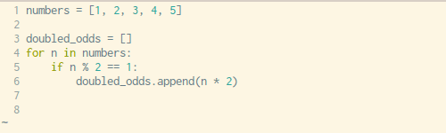

Comprehensible Comprehensions
Trey Hunner / Python & Django Trainer / @treyhunner
Assumptions
- You know how
forloops work in Python - You're not already a big fan of list comprehensions and generator expressions
Definitions
- iterable: anything you can loop over
- list comprehension: for making a new list from an iterable
- generator: for making a "lazy" (pause-able) iterable
What are comprehensions?
List comprehensions are a special syntax for turning one list into another list
Turning Old Lists Into New Lists
for loops
numbers = [1, 2, 3, 4, 5]
# Print out square of odd numbers
for n in numbers:
if n % 2 == 1:
print(n ** 2)
Turning lists into lists
numbers = [1, 2, 3, 4, 5]
# Populate new list with square of odd numbers
squared_odds = []
for n in numbers:
if n % 2 == 1:
squared_odds.append(n ** 2)
Variables Are References
>>> old = [1, 2, 3]
>>> new = old
>>> new.pop()
>>> new
[1, 2]
>>> old
[1, 2]
>>> old = [1, 2, 3]
>>> new = old[:-1]
>>> new
[1, 2]
>>> old
[1, 2, 3]
Turning lists into lists
squared_odds = []
for n in numbers:
if n % 2 == 1:
squared_odds.append(n ** 2)
With comprehensions
squared_odds = [n ** 2 for n in numbers if n % 2 == 1]
Breaking it down
squared_odds = []
for n in numbers:
if n % 2 == 1:
squared_odds.append(n ** 2)
squared_odds = [n ** 2 for n in numbers if n % 2 == 1]
Copy-pasting into a comprehension
You can always copy-paste
new_list = []
for item in old_list:
if condition(item):
new_list.append(operation(item))
new_list = [operation(item) for n in old_list if condition(item)]When can you use a list comprehension?
- When you are turning one list into another
- When you are turning one iterable into another
- At no other time
Readability
But they're not readable
for n in numbers:
if n % 2 == 1:
squared_odds.append(n ** 2)
squared_odds = [n ** 2 for n in numbers if n % 2 == 1]
Breaking up the components
squared_odds = [n ** 2 for n in numbers if n % 2 == 1]
squared_odds = [
n ** 2
for n in numbers
if n % 2 == 1
]Breaking up the components
squared_odds = [n ** 2 for n in numbers if n % 2 == 1]
squared_odds = [
n ** 2
for n in numbers
if n % 2 == 1
]
They can be more readable
squared_odds = []
for n in numbers:
if n % 2 == 1:
squared_odds.append(n ** 2)
squared_odds = [
n ** 2
for n in numbers
if n % 2 == 1
]
They can be more readable
squared_odds = []
for n in squared_odds:
if n % 2 == 1:
squared_odds.append(n ** 2)
squared_odds = [
n ** 2
for n in numbers
if n % 2 == 1
]
But wait... there's more!
With Filtering
squared_odds = []
for n in numbers:
if n % 2 == 1:
squared_odds.append(n ** 2)
squared_odds = [
n ** 2
for n in numbers
if n % 2 == 1
]Without Filtering
squared_numbers = []
for n in numbers:
squared_numbers.append(n ** 2)
squared_numbers = [
n ** 2
for n in numbers
]
With Multiple Loops
flattened = []
for row in matrix:
for n in row:
flattened.append(n)flattened = [
n
for row in matrix
for n in row
]Set comprehensions
numbers = {1, 2, 3, 4, 5}
squared_odds = set()
for n in numbers:
if n % 2 == 1:
squared_odds.add(n ** 2)
numbers = {1, 2, 3, 4, 5}
squared_odds = {
n ** 2
for n in numbers
if n % 2 == 1
}
Dictionary comprehensions
from string import ascii_lowercase
letter_positions = {}
for n, letter in enumerate(ascii_lowercase, start=1):
letter_positions[letter] = n
from string import ascii_lowercase
letter_positions = {
letter: n
for n, letter in enumerate(ascii_lowercase, start=1)
}
Generator Comprehensions
Generator Expressions
Generator Expressions
- Generator expressions are to generators as list comprehensions are to lists
- Generators are lazy single-use iterables
- If you're making a list to loop over it exactly once, use a generator expression instead of a list comprehension
Generator Expression Syntax
>>> numbers = range(1_000_000)
>>> squared_numbers = (n ** 2 for n in numbers)
>>> squared_numbers
<generator object <genexpr> at 0x7f129b187780>
Generators are weird
>>> numbers = [1, 2, 3, 4, 5]
>>> squared_numbers = (n ** 2 for n in numbers)
>>> len(squared_numbers)
TypeError: object of type 'generator' has no len()
>>> squared_numbers[0]
TypeError: 'generator' object is not subscriptable
>>> list(squared_numbers)
[1, 4, 9, 16, 25]
>>> list(squared_numbers)
[]
Generators are lazy
Generators are single use iterables
>>> numbers = [1, 2, 3, 4, 5]
>>> squared_numbers = (n ** 2 for n in numbers)
>>> sum(squared_numbers)
333332833333500000
>>> sum(squared_numbers)
0
Loop over them right away
>>> numbers = range(1_000_000)
>>> sum((n ** 2 for n in numbers))
333332833333500000
>>> sum(n ** 2 for n in numbers)
333332833333500000
Generator opportunity: sum
sum_of_squares = 0
for n in numbers:
sum_of_squares += n**2
squares = []
for n in numbers:
squares.append(n**2)
sum_of_squares = sum(squares)
sum_of_squares = sum(n**2 for n in numbers)
Generator opportunity: any
def is_prime(candidate):
for n in range(2, candidate):
if candidate % n == 0:
return False
return True
def is_prime(candidate):
divisibility= []
for n in range(2, candidate):
divisibility.append(candidate % n == 0)
return not any(divisibility)
def is_prime(candidate):
return not any(
candidate % n == 0
for n in range(2, candidate)
)
Generator opportunity: all
def is_prime(candidate):
for n in range(2, candidate):
if candidate % n == 0:
return False
return True
def is_prime(candidate):
non_divisibility= []
for n in range(2, candidate):
non_divisibility.append(candidate % n != 0)
return all(non_divisibility)
def is_prime(candidate):
return all(
candidate % n != 0
for n in range(2, candidate)
)
When to use comprehensions
Don't overdo it
- Don't use comprehensions except for making lists
- List comprehensions should only be used for turning one list into another
Don't abuse comprehensions
[print(n**2) for n in range(100) if n % 2 == 1] # Don't do this
color_ratios = {}
for color, ratio in zip(colors, ratios):
color_ratios[color] = ratio
color_ratios = {
color: ratio
for (color, ratio) in zip(colors, ratios)
}
color_ratios = dict(zip(colors, ratios))
with open(filename) as my_file:
lines = [line for line in my_file]
with open(filename) as my_file:
lines = list(my_file)
with open(filename) as my_file:
lines = my_file.readlines()
Recap
- TODO
Final
Python & Django Trainer for hire
http://truthful.technology